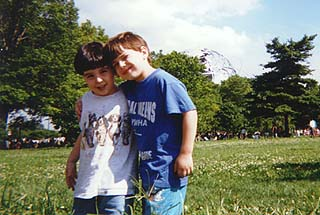
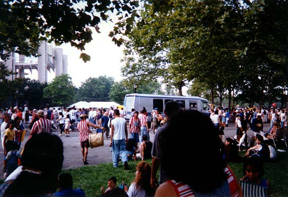

<html><head><title>Back To My Park</title></html>
<body BGCOLOR="000000" TEXT="#9f9f6f" LINK="#ff0000" ALINK="#ffff00" VLINK="#fff000">

<CENTER>
<H1>Back To My Park (Levi's Turn)</H1>
</CENTER>

Summer is over.  I spent a lot of time indoors this summer -- a lot
of time staring at computer screens.  But once I realized how fast
the months were slipping away, I managed to arrange one trip to
my favorite park, Flushing Meadows, where ducks swim in lakes,
where the Mets play in Shea Stadium and usually lose, where more
ethnic groups than I can even keep track of converge for a great
big noisy family party every weekend day.<P>

I took my brother Gary along this time, and his two kids.  Meg wanted
to stay home with Elizabeth (our oldest) while Daniel and Abigail 
came with me.  Gary's wife took the day off too.  Here are some pictures
we took.<P>

<CENTER>

<H3>Two Large Round Objects</H3>
The Globe and Abby's face.<P>
<P><BR><P><HR>

<H3>What Better Way To Spend A Sunday?</H3>
Then to sit on a beach blanket and feed Slim Jims to the babies?<P>
<P><BR><P><HR>

<H3>The Boys</H3>
Jonathan and Daniel.<P>
<P><BR><P><HR>

<H3>Ice Cream!</H3>
<P><BR><P><HR>

<H3>Here's The Whole Gang</H3>
My brother's the one with the beard.<P>
<P><BR><P><HR>

<H3>Some Other Family</H3>
I dunno, thought it made an interesting shot.<P>
<P><BR><P><HR>

<H3>Drums</H3>
Always something noisy going on around Flushing Meadows Park.<P>
<P><BR><P><HR>

<H3>Focal Point</H3>
And you know the Globe is a very funky spot.<P>
<P><BR><P><HR><HR><BR><P>

<A HREF="soren.html">Previous Posi-Web (Meg's Turn)</A><P>
</BODY></HTML>
